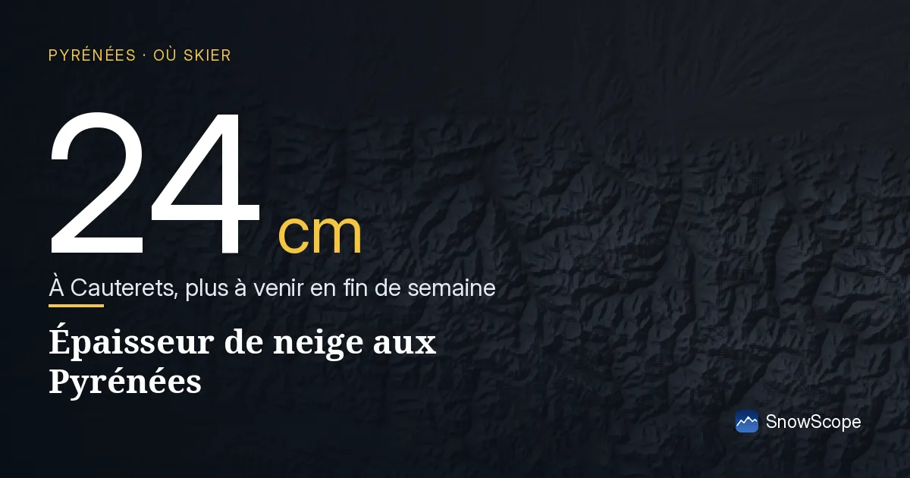

Épaisseur de neige aux Pyrénées : 24 cm à Cauterets, plus à venir en fin de semaine
Cauterets Cirque du Lys tient la meilleure neige des Pyrénées aujourd'hui avec 24 cm sur les pentes supérieures, nourrie par 12 cm de neige fraîche hier. Vendredi 25 novembre, un système majeur ajoutera 26 cm sur toute la chaîne, portant la zone enneigée de 3 460 à 9 560 km2.
Consultez les prévisions neige en temps réel pour Cauterets Cirque du Lys sur l'application SnowScopeHauteurs de neige, alertes poudreuse et carte 3D, gratuitement.
Où se situe la neige aujourd'hui
Cauterets Cirque du Lys domine avec 24 cm à 2 420 m, construits à partir de 14 cm sur les trois derniers jours. Les pentes supérieures restent au-dessus du niveau de congélation (2 240 m aujourd'hui), la neige est donc stable et sèche. Gourette atteint 16 cm à son sommet (2 453 m), où le niveau de congélation se situe à 1 840–1 870 m aujourd'hui, maintenant les conditions fermes.
L'altitude compte beaucoup. À mi-montagne (autour de 2 050–2 100 m), l'épaisseur tombe à 1–3 cm sur la plupart des stations. Au pied, la couverture de neige est mince ou absente. Ce manteau neigeux de début de saison est fragile. Restez sur les pistes damées où la base est préparée et les rochers sont moins susceptibles d'accrocher vos skis.
| Station | Hauteur de neige | Neige fraîche, 72 h | Attendu, jours suivants | Sommet |
|---|---|---|---|---|
| Cauterets Cirque du Lys | 24 cm | 14 cm | 26 cm | 2 420 m |
| Gourette | 16 cm | 13 cm | 25 cm | 2 453 m |
| Gavarnie-Gèdre | 26 cm | 10 cm | 14 cm | 2 283 m |
| Piau-Engaly | 17 cm | 13 cm | 14 cm | 2 527 m |

De l'eau qui arrive vendredi
La région connaît une période sèche aujourd'hui et demain (1 cm prévu pour les 23–24 novembre), mais un système dépressionnaire majeur arrive mercredi 24 novembre en fin d'après-midi et culmine vendredi 25 novembre. SnowScope montre 26 cm arrivant à Cauterets dans les trois prochains jours, avec 25 cm à Gourette et 14 cm aux stations du sud (Gavarnie-Gèdre, Piau-Engaly).
Vendredi en fin d'après-midi, la zone enneigée passera de 3 460 km2 aujourd'hui à 9 560 km2 prévus. Cela signifie que 51 des 53 stations de la chaîne auront une couverture mesurable, contre 44 maintenant. Le niveau de congélation baissera fortement le 25 novembre (à 1 730–1 980 m sur toute la chaîne), la neige nouvelle tombera donc en poudre à toutes les altitudes.
Quelles pentes skier aujourd'hui et demain
Les pentes exposées nord au-dessus de 2 200 m sont votre meilleur choix pour les deux prochains jours. Le terrain supérieur de Cauterets conserve la neige le plus longtemps parce que le réservoir de glace et de vieille neige se situe au plus haut là-bas. Les aspects nord de Gourette sont aussi solides. Les pentes exposées sud sont plus minces et se réchauffent chaque jour.
À mi-hauteur (1 900–2 100 m), attendez-vous à des plaques dénudées entre les pistes. Les remontées en bas et les pentes basses sont surtout de la marche sur les rochers et l'herbe en ce moment. Si votre station dispose d'un relais à mi-montagne ou d'un accès remontée plus haut, utilisez-le. La tempête de vendredi remplira les trous, mais jusque-là, restez au-dessus de 2 100 m où SnowScope montre une couverture fiable.
Timing et sécurité
Le risque de pluie est faible aujourd'hui et demain sauf le 23 novembre à Cauterets (niveau de congélation 2 930 m), où la neige mouillée peut toucher brièvement les pentes supérieures. Vendredi 25 novembre, le niveau de congélation s'effondre à 1 730 m, la neige nouvelle sera donc sèche et légère à toutes les altitudes.
Une couverture de début de saison aussi mince présente un risque d'avalanche sur les pentes raides avec des couches faibles dessous. Avant de skier hors-piste ou dans les gouloirs, consultez le bulletin officiel d'avalanche de votre secteur. Les meilleures conditions arriveront vendredi en fin d'après-midi et samedi au fur et à mesure que la neige nouvelle se tasse.
Conseils aux skieurs
- Skiez au-dessus de 2 200 m aujourd'hui et demain ; les pistes exposées nord gardent la neige plus longtemps avec une couverture mince.
- Attendez la tempête de vendredi (26 cm en route) si vous pouvez ; les conditions seront plus sûres et plus profondes sur toute la chaîne.
- Le 23 novembre, évitez les pentes les plus hautes de Cauterets aux heures les plus chaudes (niveau de congélation monte à 2 930 m) ; la neige mouillée est lourde et plus lente.
- Restez sur les pistes damées jusqu'à vendredi ; la neige de début de saison est mince et les rochers sont près de la surface.
- Lisez le bulletin officiel d'avalanche avant tout ski hors-piste, surtout les 25–26 novembre quand la neige nouvelle charge les pentes.
À propos de ces chiffres
Les hauteurs de neige des stations sont la neige la plus épaisse sur le haut du domaine à la date indiquée ; ce sont des estimations pour une zone, pas une mesure en un point. Les prévisions peuvent changer. Consultez toujours le bulletin d'avalanche officiel avant le hors-piste.
Bulletins d'avalanche officiels: Météo-France / Meteocat / AEMET
Citer ce bulletin
Pour la recherche, l'enseignement ou la presse : chiffres et graphiques réutilisables librement sous CC BY 4.0 avec cette citation.
SnowScope (2026), Épaisseur de neige aux Pyrénées : 24 cm à Cauterets, plus à venir en fin de semaine, https://snowscope.app/blog/fr/2026/11/pyrenees-where-to-ski-best-snow-22-november-2026.html, consulté le 2026-11-22
SnowScope (Atlas Labs). (2026, November 22). Épaisseur de neige aux Pyrénées : 24 cm à Cauterets, plus à venir en fin de semaine. SnowScope snow reports. https://snowscope.app/blog/fr/2026/11/pyrenees-where-to-ski-best-snow-22-november-2026.html
BibTeX
@misc{snowscope2026pyreneeswheretoskibestsn,
author = {{SnowScope (Atlas Labs)}},
title = {Épaisseur de neige aux Pyrénées : 24 cm à Cauterets, plus à venir en fin de semaine},
year = {2026},
month = nov,
howpublished = {\url{https://snowscope.app/blog/fr/2026/11/pyrenees-where-to-ski-best-snow-22-november-2026.html}},
note = {Published 2026-11-22 19:35 UTC; accessed 2026-11-22}
}· CC BY 4.0 · Méthodes, données et outils →
Suivre Cauterets Cirque du Lys
Gratuit : un message quand la neige arrive, et la météo chaque matin.
Autres bulletins neige

Prévisions neige Pyrénées sur deux semaines : Gavarnie-Gèdre mène 6 stations avec 36 cm de neige nouvelle d'ici le 26 novembre. Données du 12 novembre.

Gavarnie-Gèdre domine les Pyrénées avec 26 cm en altitude le 22 novembre. La couverture neigeuse a triplé en deux jours dans la région.